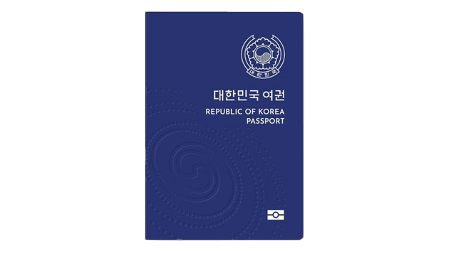
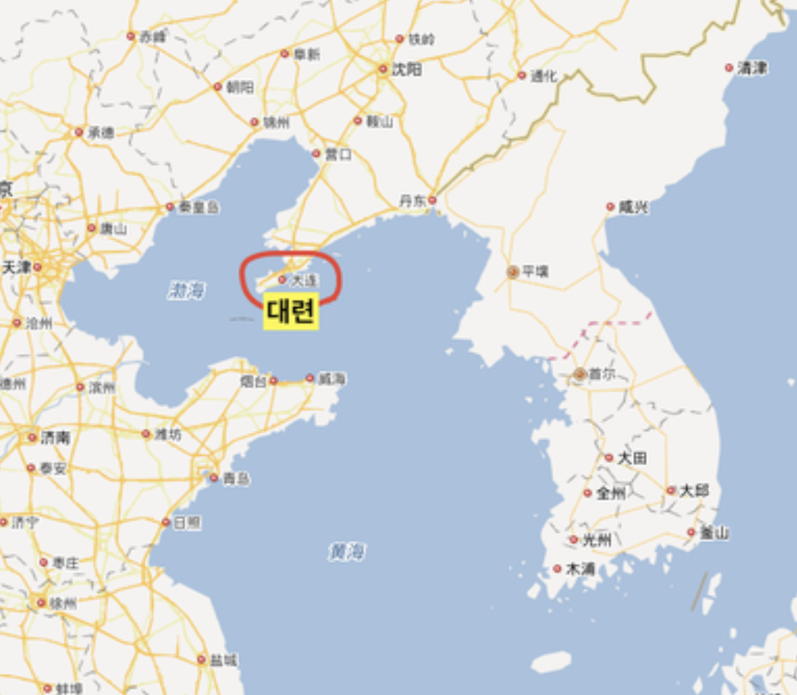
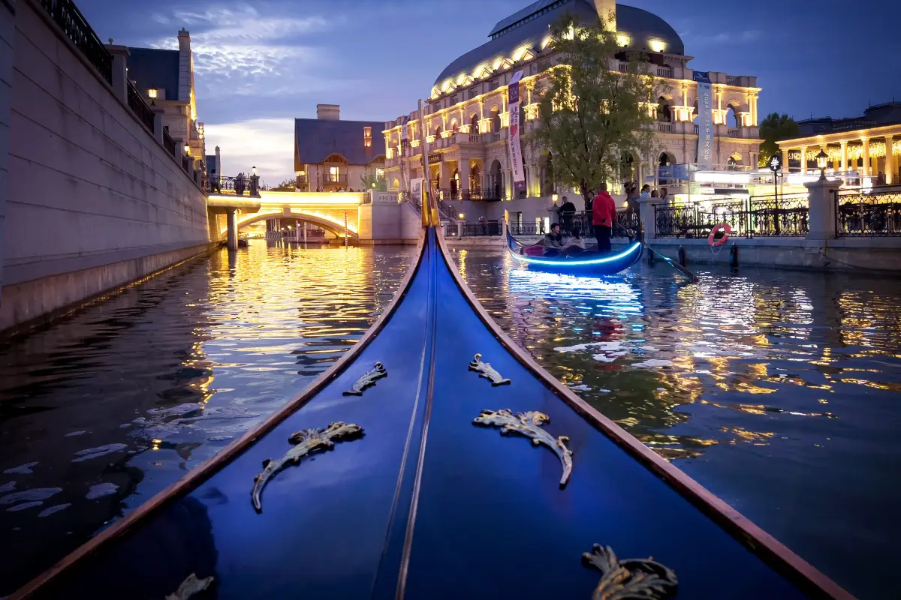
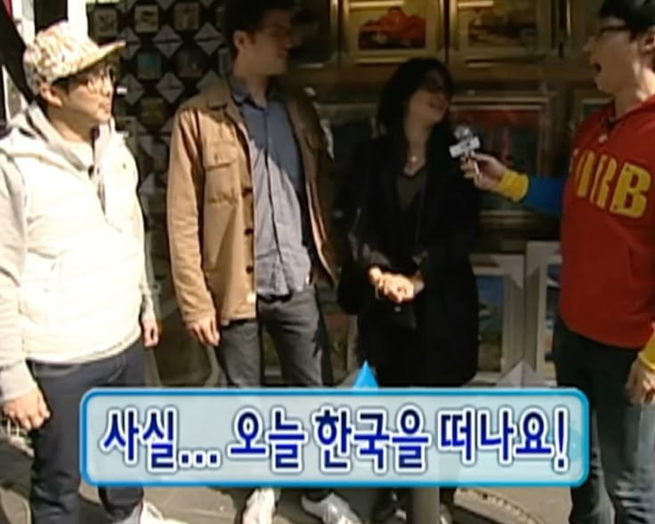
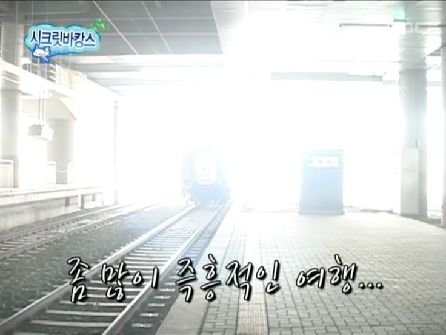
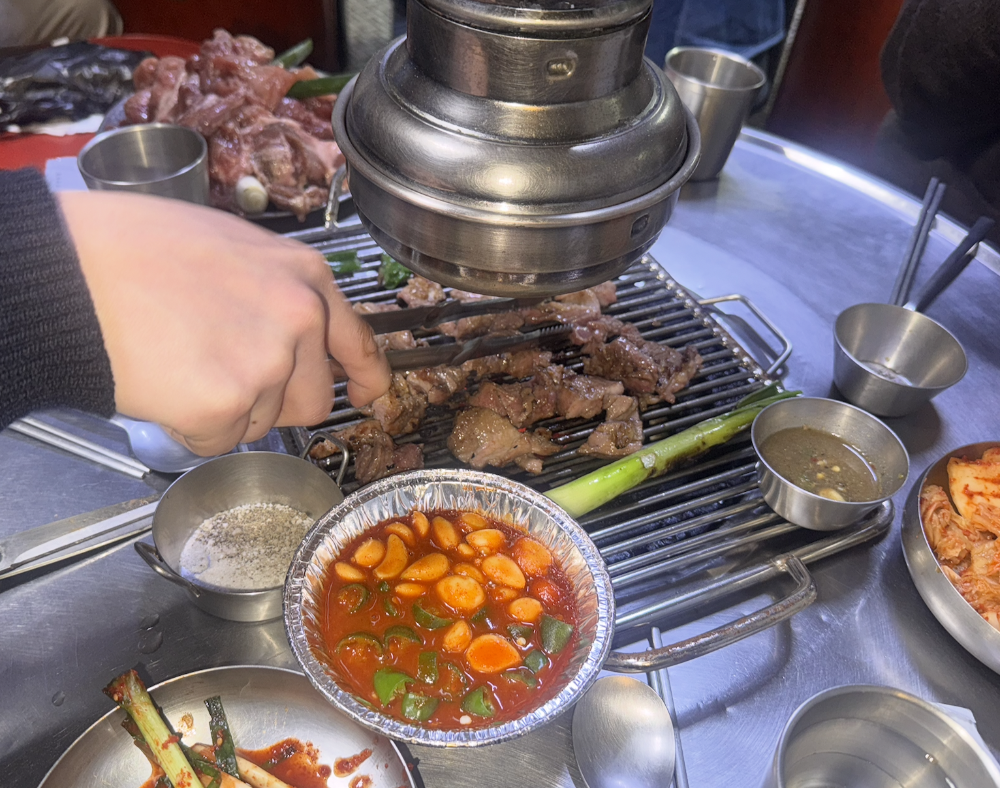
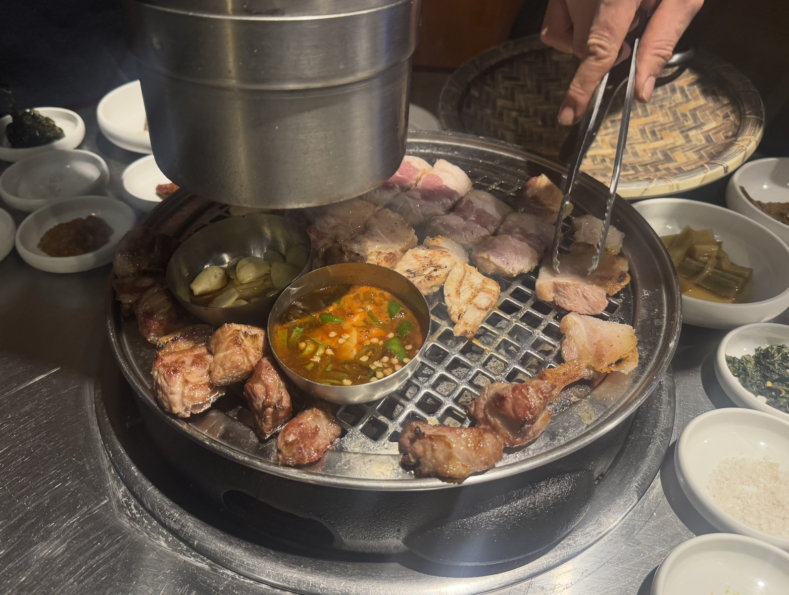
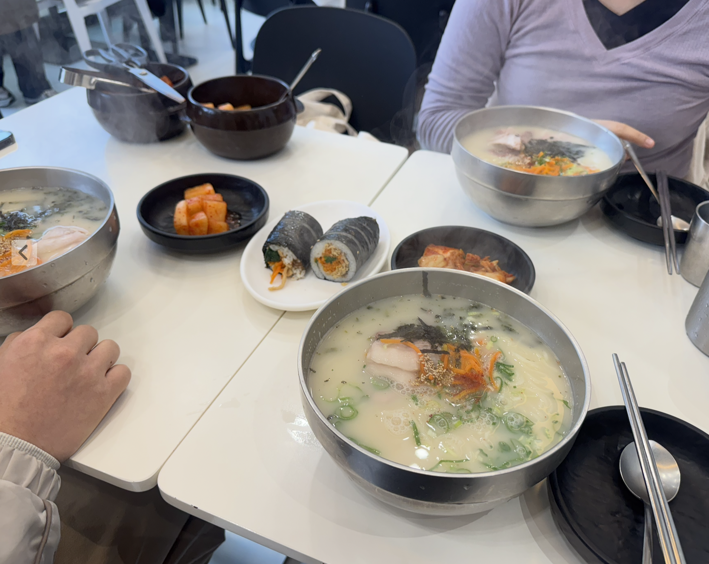
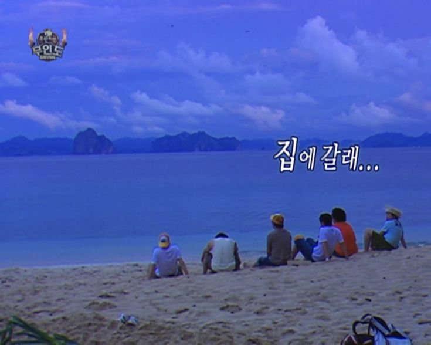
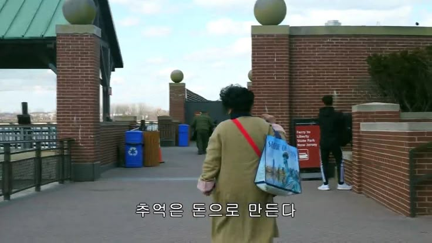

전개가 왜 이렇냐고 따져도 할 말이 없다.
그렇지만 그때는 뭔가 그래야만 할 것 같았다.


어느정도의 즉흥성은 우리의 삶에 특별한 이벤트를 더해주기도 하지만,
너무 과한 즉흥성은 가끔 화를 불러오곤 한다.
3시간 뒤에 출발하는 비행기를 예매하고 바로 공항으로 달려가본 적이 있는가? 나는 있다..
사건의 전말은 이렇다.
여행을 자주 가던 친구 A,B, 그리고 나.
나는 계획적인 성격이지만 저 둘은 즉흥의 끝판왕이다.
지금 당장 하고 싶은 것을 하지 못한다면 거품을 물고 쓰러지는 성격의 사람들.
특히 둘은 여행에 미친 사람들인데, 여행을 하도 많이 다니다 보니 금전적 어려움을 크게 겪고 있었지만,
그 둘은 그런것 따위에 굴하지 않는 사람들이었다.
어떻게든 그 적고 적은 금액 안에서 여행을 갈 수 있는 수많은 가능성을 찾아내곤 하던 둘이었다.
그저 '떠나야한다'는 것에만 초점이 맞춰져 있는 사람들이었기에 목적지는 그닥 중요하지 않았다. 둘은 일반적인 사람들과 같이 목적지를 먼저 정하는 것이 아닌,
15만원으로 어디까지 갈 수 있다고 생각하는가?
요즘같은 물가론 당장 국내 여행도 힘들거라고 생각하는게 당연하다. 그러나 이 둘은..
국내를 넘어서 해외로, 심지어 단순히 비행기 왕복 가격이 아닌 무려
목적지는 바로~

사실 이날 나는 대련이라는 곳을 처음 들어봤다.
일단 목적지를 정하고 그 목적지에 대해 공부하는 시간을 가지는 신박한 방식으로 일이 흘러갔다.

대련에는 가짜 베네치아도 있고,
우리나라에서도 은근 아는사람들은 아는 유명세 있는 관광지였다!
그리고 우리의 여행 날짜는 무려

둘은 3일 뒤에 해외여행을 가자는 미친 계획을 나에게 몰아붙이기 시작했고,
그들의 끝도 없는 설득에 나는 결국 넘어갈 수밖에 없었다.
3일간 중국 입국을 위한 QR을 등록하고, 중국에 사는 현지인 친구에게 연락해 대련에 가면 가야할 곳들 리스트를 짜고, 옷을 고르고.. 3일간 나름 바쁘고도 알차게 여행 준비를 해나갔다.
그리고 대망의 여행 당일.
일어나 캐리어에 짐을 떄려넣고 있던 중,
이상하리만치 불안감을 자아내는 핸드폰 알림음이 울렸다.
.
.
.
정신병자가 될 뻔했다.
이 아이에게 어떤 처분을 내려야 할까?
아찔해지는 정신을 붙잡으며 나는 계속
찾아보라고,
찾을 수 있을거라고.
기억을 더듬어보라고.
A를 설득했다.
중국이었기에 비상여권도 발급이 불가능한 상황.
보통은 공항으로 떠날때쯤 기적적으로
"아 뭐야 여기 있었네!"
라는 연락이 오고,
"하하 호호 큰일날 뻔 했잖아~!"
하며 마무리 되는 것이 일반적이지만,
이날은 그렇지 못했다.
A는 끝까지 여권을 찾지 못했고 그녀가 여권을 찾을 수 있을 것이라 믿고 캐리어를 든 채 공항버스를 타러 나온 나와 B는 깊은 고민에 빠졌다.
이 아이를 버리고 대련으로 단 둘이 떠날 것인가, 아니면 50%의 수수료와 함께 이 여행을 취소할 것인가?
전화기를 붙든 채 아무말도 하지 못하고 한참을 고민하던 우리는
결정했다.
>>>제주도에 가기로!!
전개가 왜 이렇냐고 따져도 할 말이 없다.
그렇지만 그때는 뭔가 그래야만 할 것 같았다.
사실 사주마스터였던 B가 우리의 다음날 사주를 봤는데, 장기가 털리든 돈을 다 빼앗기든 무슨 일이 일어날 수 밖에 없는 사주였기에 이건 신이 말리는 여행이다 생각하고 황급히 취소했다.
여권을 잃어버린 A는 자신의 잘못을 세시간 내내 사죄하며
제주도행 비행기와 고기를 사주기로 협의를 봤다.
(가서 셋이 무려 20만원어치의 고기를 먹었다.)
그렇게 친구 B와 나는 속으로 "개꿀"을 외치며
6:30에 9:30 비행기를 예약했고,
인천공항행 공항버스를 보내준 채 지하철을 타고 김포공항으로 질주했다.
정말 급박한 상황이었기에 비행기 수속 마감시간까지 검색해가며 죽을 힘을 다해 달렸다.


그렇게 우리의 제주도 여행은 시작되었다!
중국을 가기 위해 쌌던 짐이었기에 옷도 다 제주도에는 맞지 않는 옷이었고,
뭐 하나 제대로 준비된 것도 없었던.. 제주도 여행은 정말 즉흥의 연속이었다.
그렇지만 정말 즐길 수 있는 것은 모두 즐겼던 여행이었다.
말도 안되게 예쁜 제주도의 바다를 마음에 쏙 드는 이층짜리 숙소에 누워 하염없이 바라보기도 하고,
회도, 흑돼지도, 고기국수도 원없이 먹고.




또다시 이 즉흥의 악마들은 이틀만 더 있자며,
2박 3일이었던 여행은 그렇게 뒤에 이틀이 더 붙었다.
하루는 '금오름'에 오르려고 오름에 갔다가 험난해보이는, 수상한 길이 자꾸만 눈에 밟혀 셋 다 무언가에 홀린 듯 그 길로 올라갔는데 등산코스만큼이나 험난한 길이었고, 그렇게 고생고생해서 올라간 길은 심지어 금오름으로 가는 길도 아니었다.

무슨 거대한 송전탑이 박혀있는 휑하디 휑한 오름이었고 반대편에 보이는 금오름에 셋 다 전의를 상실하고 송전탑 앞에 드러누워 있었다.
그런데 갑자기 친구 A가 소리를 지르기에 무슨 일이냐 물었더니
비행기가 결항되어버리고 만 것.
셋다 이제는 좀 집에 가야할 때가 왔다며 소리를 지르며 황급히 오름에서 내려와 일단 밥부터 먹었다.
(또 전개가 왜이러느냐고 묻지 말아달라)
그렇지만 다행히 다른 비행기는 탈 수 있었고 무사히 집으로 돌아올 수 있었다......

나는 평소 계획적인 편이기에 이런 즉흥적인걸 굉장히 싫어하는 편인데, 그래서 이 여행은 어땠느냐 물으면
살면서 갔던 여행 top5 안에 든다!
즉흥도 정말 제대로 즉흥이라면, 무서울 것이 없다는 것을 이 여행을 통해 깨달았다.
계획된 대로 아무것도 되지 않았던 여행이었기에 더 기억에 남는다.
다들 살면서 한번쯤 이런 여행, 꼭 해보시길 바란다.
